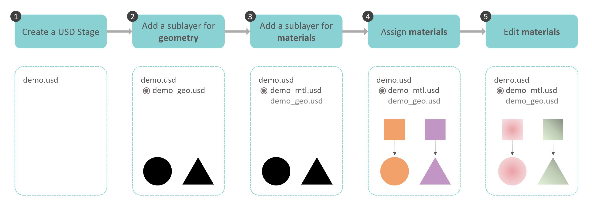
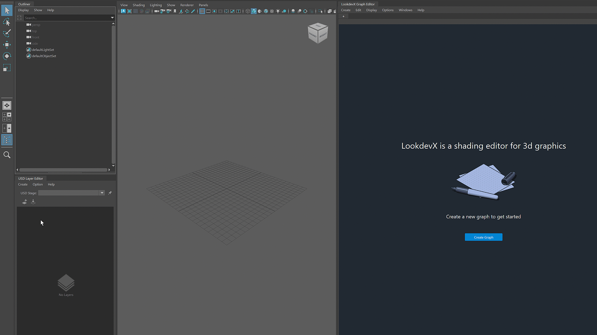
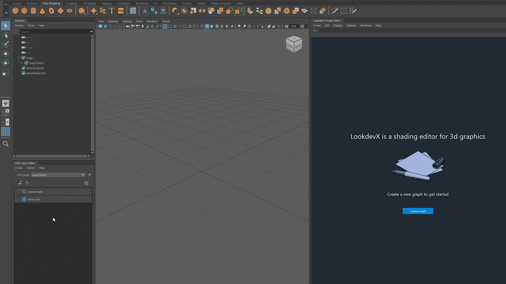
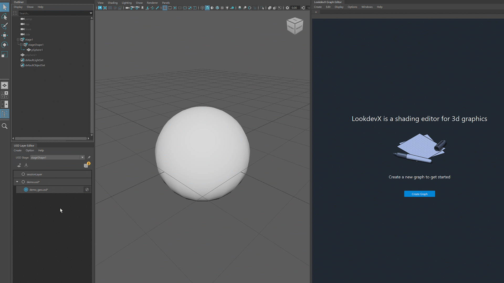

Overview of the USD data model for LookdevX
- Ensure that LookdevX and USD for Maya are loaded in the Plug-in Manager (Windows > Settings/Preferences > Plug-in Manager)
- Open USD Layer Editor (Windows > USD Layer Editor)
- Open LookdevX Graph Editor (Windows > LookdevX Graph Editor)
Basic workflow:
The following diagram describes a workflow for working with LookdevX using the USD data model.

1. Create a USD Stage
To create a USD stage, select Create > Stage with New Layer.

2. Add a sublayer for geometry
To add a sublayer, right click the layer and select Add Sublayer.

3. Add a sublayer for materials
Following the same procedure in step 2 to create a sublayer for materials.

4. Assign materials
To assign new material to a geoemtry, right click the geometry in the Outliner and select Assign New Material.
With LookdevX, you can choose from these material formats: Arnold, MaterialX and USD Preview Surface.
Example 1: assign Arnold standard surface to the geometry

Example 2: assign MaterialX standard surface to the geometry

5. Edit materials in LookdevX
Example 1: edit Arnold materials

Example 2: edit MaterialX materials